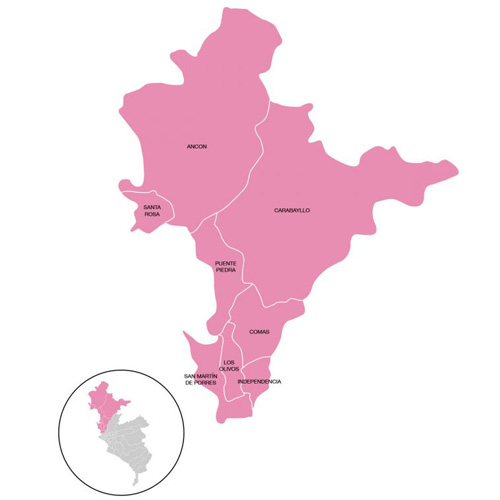

Galletas Orgánicas
S/ 4.50
Galletas artesanales con avena, miel y cacao — sin preservantes.
Deliciosas galletas, granolas y mini kekes hechos con ingredientes naturales y empaques ecológicos. Pensados para tu día a día en Lima Norte. Nuestros productos están elaborados con insumos orgánicos locales, llenos de sabor y energía para acompañarte en cualquier momento. Porque comer saludable también puede ser delicioso, práctico y sostenible.

Elaborar y comercializar productos saludables (galletas, granolas y kekes) con insumos naturales y orgánicos, fomentando una alimentación consciente y apoyando a los pequeños productores locales.
Ser una empresa reconocida en Lima Norte por ofrecer snacks saludables, orgánicos y deliciosos, contribuyendo al bienestar de las personas y al cuidado del medio ambiente.
Creemos que comer rico y saludable puede ser práctico. Usamos ingredientes locales, evitamos conservantes y usamos empaques biodegradables para reducir el impacto ambiental.
S/ 4.50
Galletas artesanales con avena, miel y cacao — sin preservantes.

S/ 12.00
Mezcla de avena, frutos secos y miel orgánica — ideal para desayunos.
S/ 6.00
Kekes pequeños hechos con plátano y quinua — perfectos para meriendas.
Precios y productos sujetos a disponibilidad. Envíos: solo Lima Norte por ahora.
Distribuimos actualmente en los distritos de Los Olivos, Comas, Independencia y San Martín de Porres (Lima Norte).
